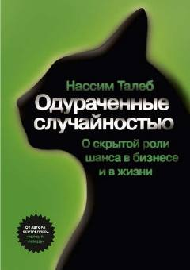

TATasodifning inson hayoti va moliya bozorlariga ta'siri haqidagi mashhur asar.
Ushbu kitob inson hayoti va moliyaviy bozorlarda tasodifiylikning o'rni hamda uning odamlarga qanday ta'sir qilishini tahlil qiladi. Muallif ratsionallik, ehtimollik va omad tushunchalarini o'ziga xos tarzda ochib beradi. Asar moliyaviy soha mutaxassislari va keng kitobxonlar ommasiga mo'ljallangan.